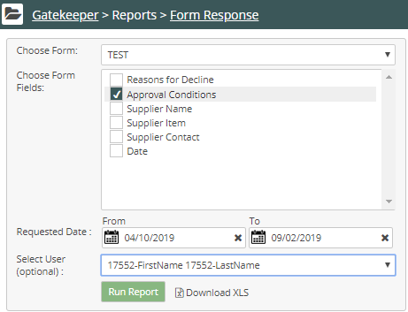
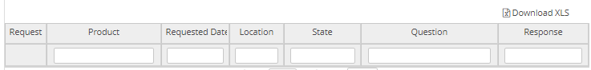

The Gatekeeper Form Response report page displays the questions and their answers from all product request forms or approver forms.
To run a Report:
Click the Gatekeeper Main menu. In the Gatekeeper Navigation panel, under Reports, select Form Response.
Choose a form for which you wish to view questions and answers.
Choose the fields (questions) in the form for which you wish to view answers. Use CTRL-click to choose more than one field or CTRL-A to select all.

Choose the Requested Dates, the start and end dates for the report.
(Optional) From the drop-down list, select users.
Click Run Report. The report displays.

Form Response report columns:
Request ID: The ID assigned to the request.
Product: The product name as stated in the Safety Data Sheet (SDS).
* Manufacturer: The manufacturer's name.
* Requestor: The requestor's name.
Requested Date: The date the request was made.
Location: The location for which the product was requested.
State: The state of the request: Not Submitted (created and saved for future submission), Awaiting Approval, Approved, and Declined.
Question: The question asked on the request form.
Response: The answer the requestor provided to the question.
Comments: The comments field used by approvers when approving or declining a request.
Note: * Fields with an asterisk are included in the XLS download file.